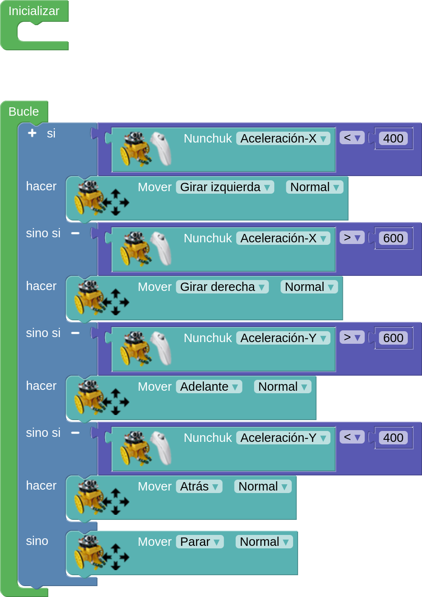
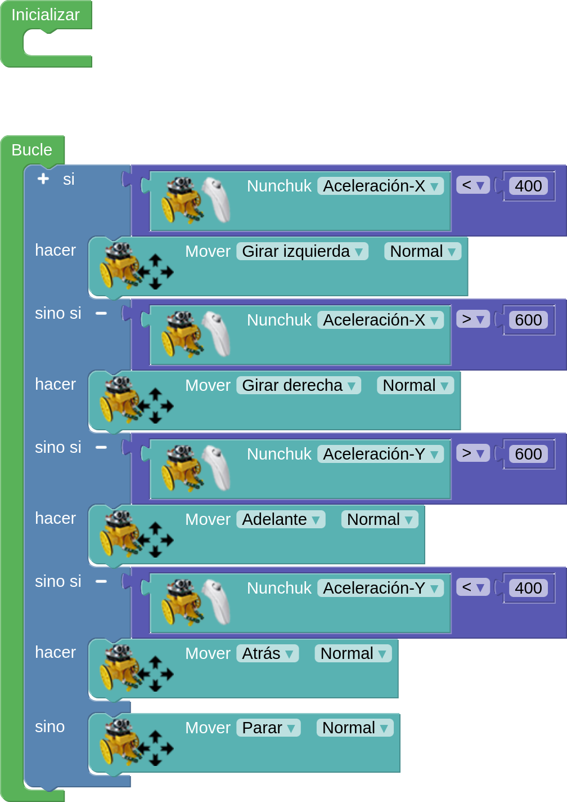

Ejemplo
Se trata de controlar los movimientos del robot con el acelerómetro del mando nunchuck.

Se trata de controlar los movimientos del robot con el acelerómetro del mando nunchuck.

Obra publicada con Licencia Creative Commons Reconocimiento Compartir igual 4.0